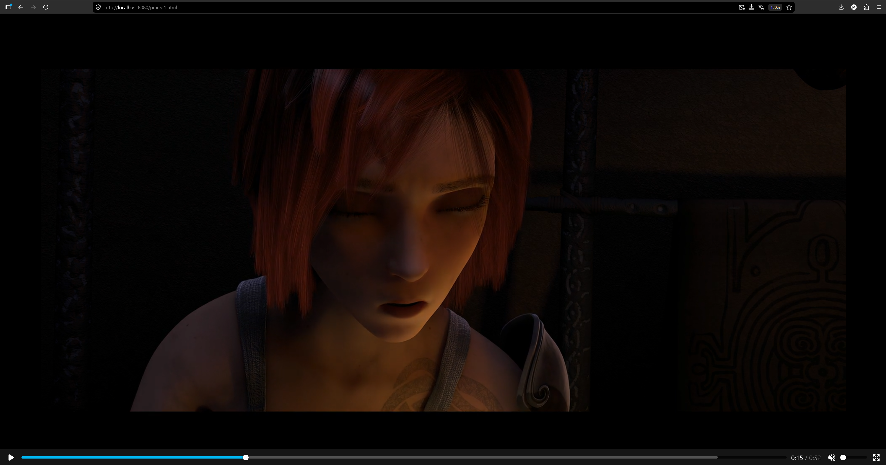
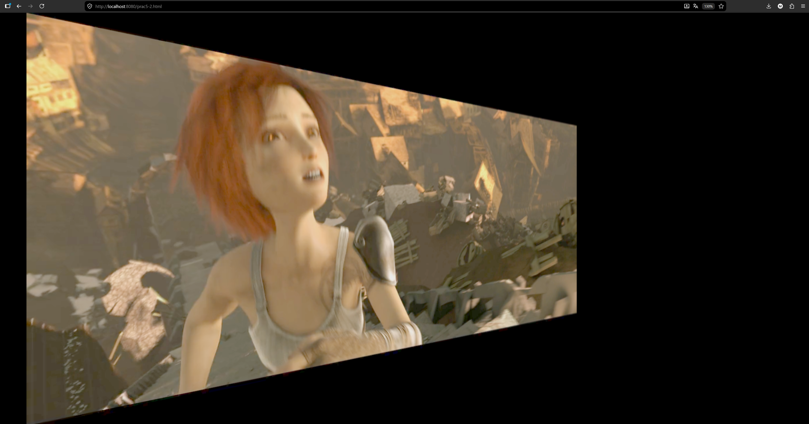

Memoria
Descripción de la práctica
En esta practica se hace uso de videos y audio para crear Manifiestos ademas de servirlos usando un servidor HTTP.
Preguntas iniciales
En ambos manifiestos solo se inlcuye una codificacion de audio. En el primer manifiesto se incluyen 4 opciones de codificacion distinta, pero todas a la misma resolucion. Sin embargpo, en el segundo manifiesto se incluye una unica opcion de codificacion, pero con 3 resoluciones distintas, 512x288, 768x432 y 1280x720.
Ejercicio 1
En este ejercicio se reproduce el manifiesto generado a partir de los trailers descargados, en ese manifiesto se incluye un audio y las tres resoluciones descargadas, 480p, 720p y 1080p. Al no tener la maquina virtual, no se reproducira el video, por eso se incluye una captura de como se veria:

Ejercicio 2
En este ejercicio se usa el ejecercicio 2 de la practica 3 como base y se hace que el video se muestre a traves de streaming al igual que se hizo en la practica 1. Al no tener la maquina virtual, no se reproducira el video, por eso se incluye una captura de como se veria:

Dificultades encontradas
A lo largo de esta practica no se han encontrado grandes dificultades, ya que se han seguido los pasos indicados en el enunciado y se han usado los mismos archivos de video y audio que se indicaban.